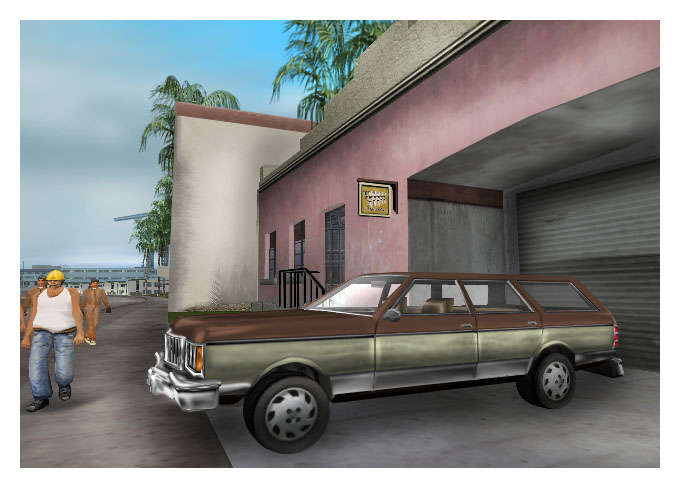
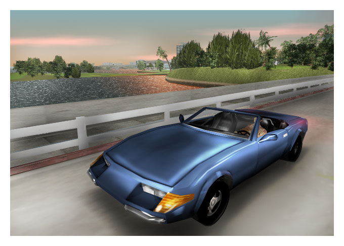
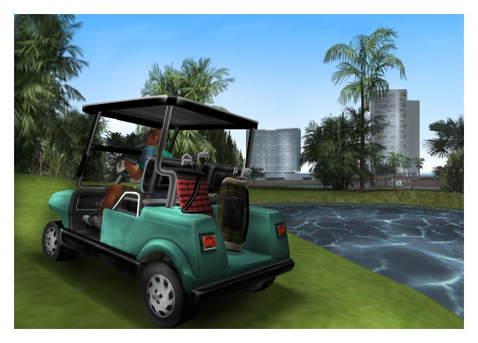

Here's a few pictures of cars I found. Basically, cars haven't changed much, although they have in a way. What I mean is, good luck finding a people carrier or a sports utility vehicle back then. Station wagons, sports cars and that sort of thing. I also found a picture of a speedboat, which is very nice indeed...

Car for suburban mothers.

Look at this ponce on a moped. Really fancies himself, doesn't he?
Beautiful little speedboat.

You know what they say about a bloke with an expensive sportscar... Trying to hide certain inadequacies?
last month's entry
Well, they had cars in the 80s, and lots of them were stupid, but I can't find any photos. Instead I found
this funny photo. I'll grant you it isn't a car. It's a golf cart, but its more interesting than a car. Now,
only idiots played golf, but driving the carts was quite fun, especially after a five day bender at the
Malibu. But it was when the Yuppies got really into golf but they was too lazy to walk that it all got
silly.

NOTE: Golf is a stupid game for people who like wearing silly trousers, but the golf club was a nice place
to hang out, especially if you knew everybody in town, Perkins.